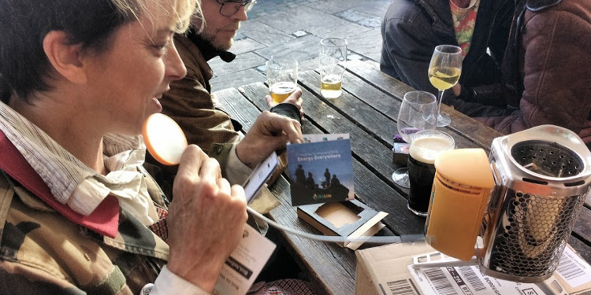

Introduction
Eileen Ford is artist Karen Barnes' home and occasional pinhole camera van! She mostly lives and works off-grid in the Creeknet area. Her mobile camera unit approximately 1.2 m3 is often parked outside the Birdsnest Pub but it gets pushed around the area to events and for portrait work. It's twice been pushed all the way up to Westminster for ceremonial mooning at parliment!
Please post your Eileen Ford story or questions to eileenford@deptfordcreek.net